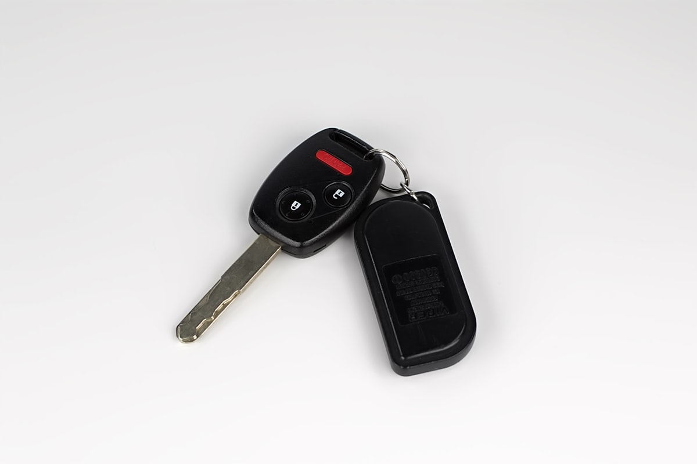

Ключі Subaru в Ужгороді — виготовлення, дублікат, smart-ключі

Виготовляємо ключі Subaru для всіх популярних моделей: Forester (SF, SG, SH, SJ, SK), Outback (BP, BR, BS, BT), Impreza, XV (Crosstrek), Legacy, Tribeca, Ascent. Subaru використовує лезо DAT17 (старіші) та TOY43 (новіші), чіпи 4D62, ID47, DST-AES. Для нових Subaru з system keyless access потрібне сучасне обладнання — у нас є Lonsdor K518ISE та Autel IM608 PRO.
Потрібен ключ Subaru?
Зателефонуйте — скажемо точну ціну та чи є потрібна заготовка
З якими моделями Subaru ми працюємо
- Subaru Forester (SF, SG, SH, SJ, SK)
- Subaru Outback (BP, BR, BS, BT)
- Subaru Impreza (GD, GE, GH, GP, GJ, GK)
- Subaru XV / Crosstrek (GP, GT)
- Subaru Legacy (BL, BM, BN)
- Subaru Tribeca
- Subaru Ascent
- Subaru BRZ
- Subaru WRX, WRX STI
Ціни на ключі Subaru в Ужгороді
| Послуга | Ціна | Час |
|---|---|---|
| Дублікат механічного ключа (старі Impreza, Legacy) | від 2200 грн | 30 хв |
| Викидний ключ з чіпом 4D62 (Forester SH, Outback BR) | від 2800 грн | 1 год |
| Smart-ключ Subaru (Forester SK, Outback BS, XV GT) | від 4500 грн | 1–2 год |
| Smart-ключ нові Subaru з DST-AES (2019+) | від 5500 грн | 2–3 год |
| Програмування при повній втраті | від 4500 грн | 2–4 год |
| Заміна корпусу smart-key | від 800 грн | 20 хв |
* Ціна залежить від моделі, року, ринку. Subaru з американського ринку — окремий розрахунок.
Чому Seven Keys для Subaru?
- Усі покоління Subaru від 1998 року до 2025
- Програматори Lonsdor K518ISE, Autel IM608 PRO, VVDI Key Tool Plus
- Чіпи 4D62, ID47, DST-AES — у наявності
- Лезо DAT17, TOY43 — на складі
- Працюємо як з європейськими, так і з американськими Subaru (315/433 МГц)
Часті запитання про ключі Subaru
Скільки коштує ключ для Subaru Forester?
Викидний ключ для Forester SH/SJ (2008-2018) — від 2500 грн. Smart-ключ Forester SK (2018+) — від 4500 грн з програмуванням.
Чи робите ключі для американських Subaru?
Так. Американські Subaru можуть мати інший радіопротокол (315 МГц проти 433 МГц у Європі), уточнюйте при замовленні.
Чи можна зробити ключ Outback без оригіналу?
Так. Для Outback BR/BS — програмування через OBD-II з пін-кодом. Робота 2-3 години, ціна від 4500 грн.
Чи відрізняється ключ Crosstrek від XV?
Ні, це одна машина — XV на європейському ринку, Crosstrek в США. Ключі ідентичні.
Не знайшли свою модель Subaru?
Працюємо з усіма Subaru — зателефонуйте